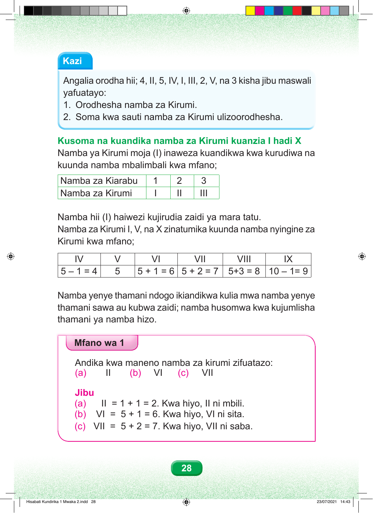

Kazi Angalia orodha hii; 4, II, 5, IV, I, III, 2, V, na 3 kisha jibu maswali yafuatayo: 1. Orodhesha namba za Kirumi. 2. Soma kwa sauti namba za Kirumi ulizoorodhesha. Kusoma na kuandika namba za Kirumi kuanzia I hadi X Namba ya Kirumi moja (I) inaweza kuandikwa kwa kurudiwa na kuunda namba mbalimbali kwa mfano; Namba za Kiarabu 1 2 3 Namba za Kirumi I II III Namba hii (I) haiwezi kujirudia zaidi ya mara tatu. Namba za Kirumi I, V, na X zinatumika kuunda namba nyingine za Kirumi kwa mfano; IV V VI VII VIII IX 5 – 1 = 4 5 5 + 1 = 6 5 + 2 = 7 5+3 = 8 10 – 1= 9 Namba yenye thamani ndogo ikiandikwa kulia mwa namba yenye thamani sawa au kubwa zaidi; namba husomwa kwa kujumlisha thamani ya namba hizo. Mfano wa 1 Andika kwa maneno namba za kirumi zifuatazo: (a) II (b) VI (c) VII Jibu (a) II = 1 + 1 = 2. Kwa hiyo, II ni mbili. (b) VI = 5 + 1 = 6. Kwa hiyo, VI ni sita. (c) VII = 5 + 2 = 7. Kwa hiyo, VII ni saba. 28 Hisabati Kundirika 1 Mwaka 2.indd 28 23/07/2021 14:43